Two interleaved path families avoid orientation ambiguity and local path conflicts.
Composites Part B: Engineering · 2026
Derivable geodesic weaving: enabling tension-compression anisotropic topology optimization of densified continuous fiber paths with controlled-spacing
A dual-field topology optimization framework that converts differentiable geodesic fields into dense, continuous, fabrication-ready fiber paths while accounting for the bi-modulus behavior of printed composites.
1 School of Mechanical Engineering, Shandong University, China
2 Graduate School of Engineering, The University of Osaka, Japan
3 Graduate School of Engineering, The University of Tokyo, Japan
* Corresponding authors
Abstract
Conventional homogenized optimization is computationally efficient, but its density and orientation fields do not directly provide printable fiber paths. This work closes that gap with two orthogonal geodesic fields whose gradients define globally consistent path directions. Structural topology, field phases, orientation, and fiber spacing are optimized together. A bi-modulus material model steers reinforcement toward tensile load paths, while a dedicated alignment-and-bridging procedure converts the optimized fields into continuous G-code-ready trajectories. Numerical studies and printed specimens show that the method improves path continuity, fiber utilization, stiffness, and peak load capacity.
A fiber-density variable controls local spacing and overall reinforcement usage.
Tension-compression asymmetry is embedded directly in analysis and optimization.
Field alignment, path extraction, and bridge selection produce continuous toolpaths.
Method
Five coupled design fields are optimized: material density, two selective variables, fiber orientation, and fiber spacing. The selective variables split the domain into two phases, each associated with a derivable geodesic field. Their orthogonal streamline families provide a continuous representation of fiber direction and allow the homogenized constitutive model to remain consistent with the final printable paths.
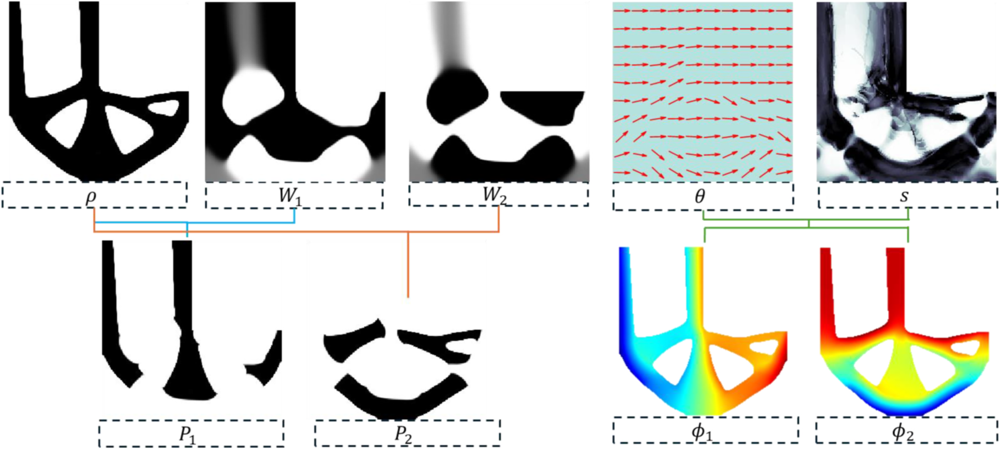
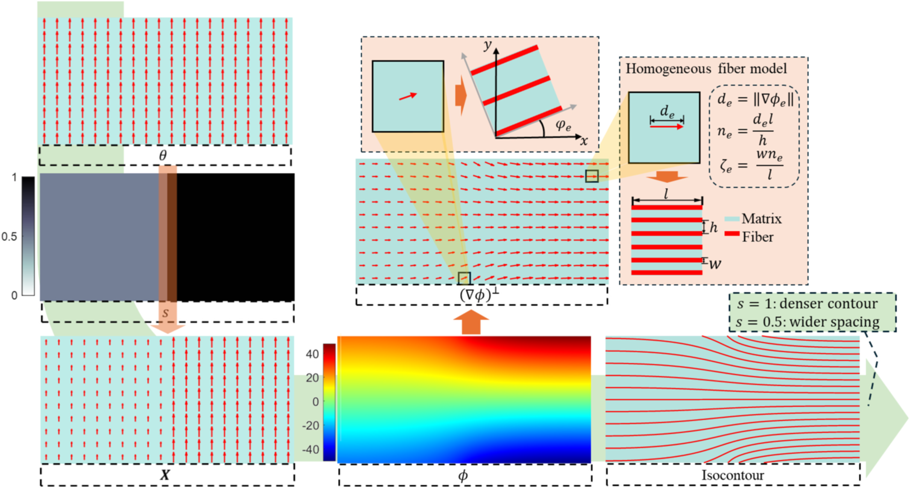
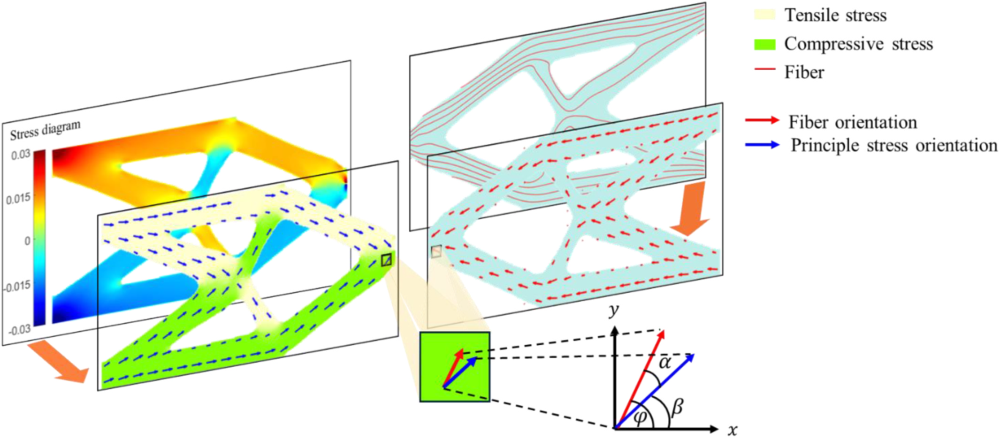
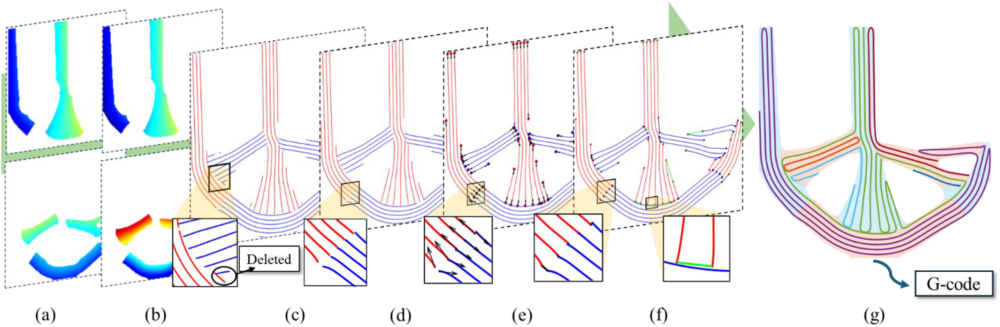
Numerical Results
L-bracket, double-clamped beam, and bridge-shaped benchmarks evaluate the influence of dual fields, fiber-density limits, and tension-compression asymmetry. Across the examples, the optimized paths remain continuous and concentrate reinforcement along the mechanically relevant trajectories.
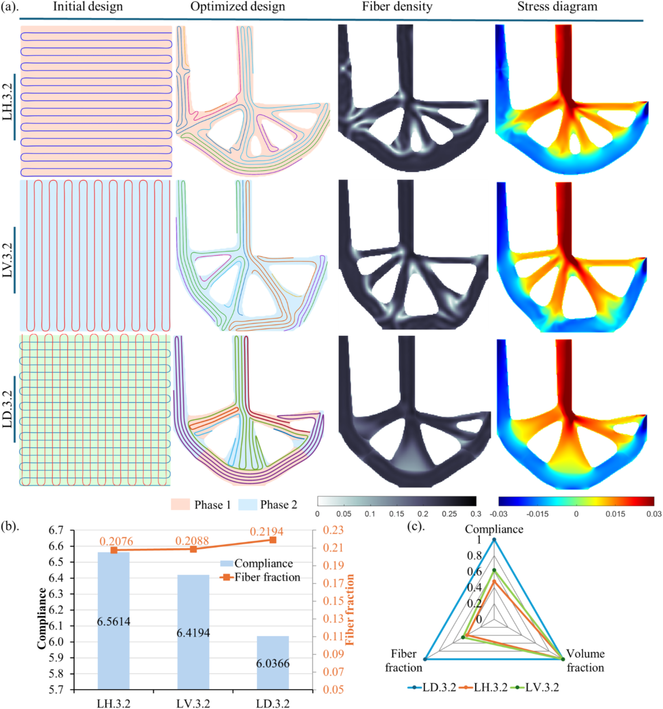
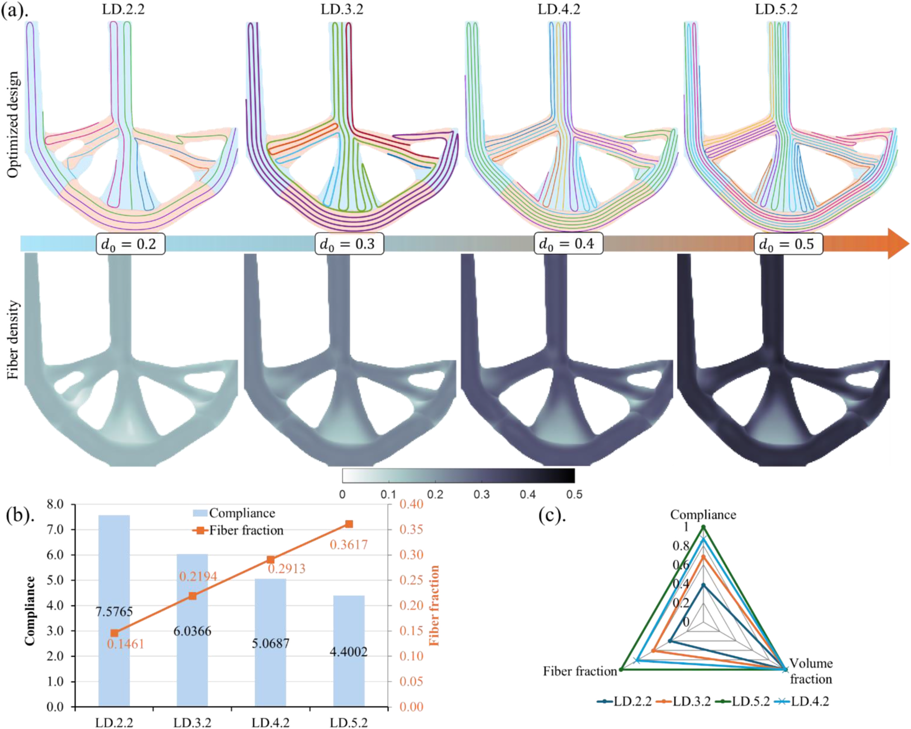
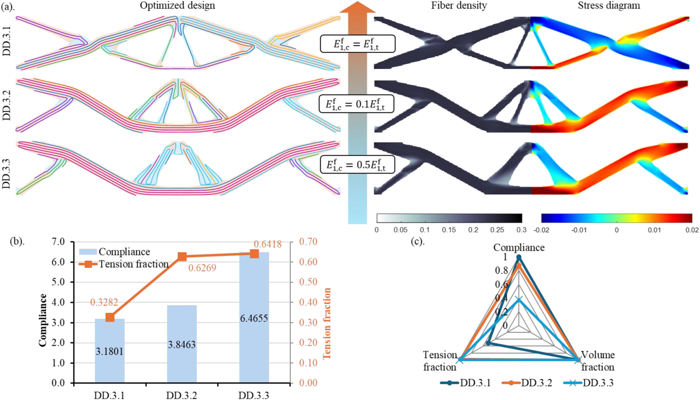
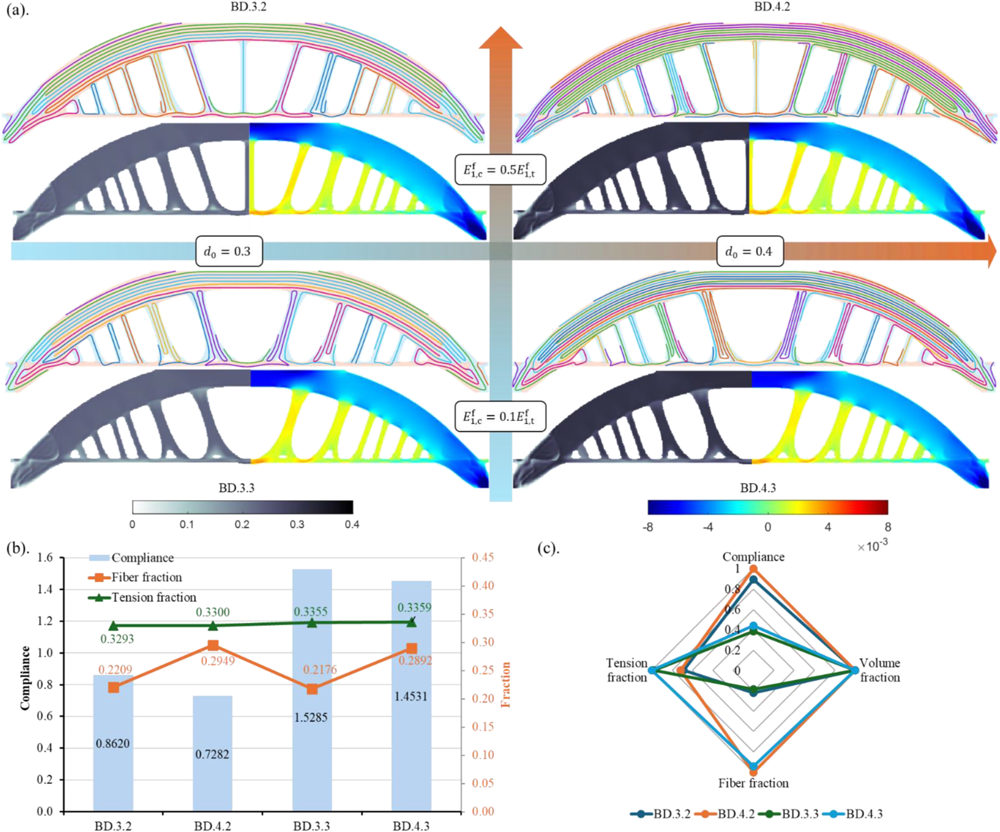
Fabrication and Experiments
Material tests identify the anisotropic, tension-compression-dependent constitutive parameters of the printed composite. The double-clamped beam is then re-optimized with these measured properties. Optimized boundaries are exported as STL geometry, while geodesic iso-contours are converted to fiber toolpaths and G-code for dual-nozzle printing.
- The compared specimens have similar average mass, enabling a fair mechanical comparison.
- The bi-modulus-aware design suppresses premature compression-driven buckling.
- Continuous fibers are preferentially aligned with tensile load-transfer paths.
- The resulting load-displacement response remains more stable before final failure.
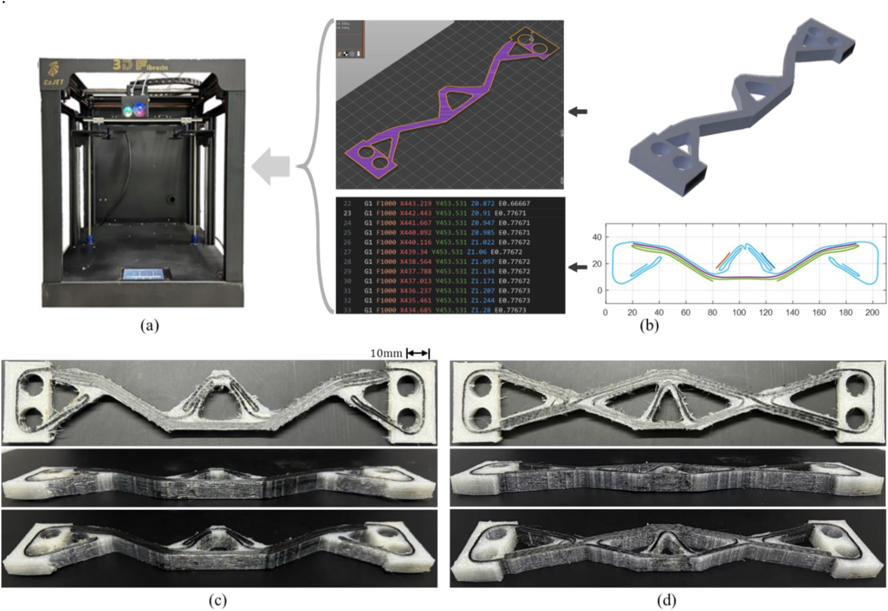
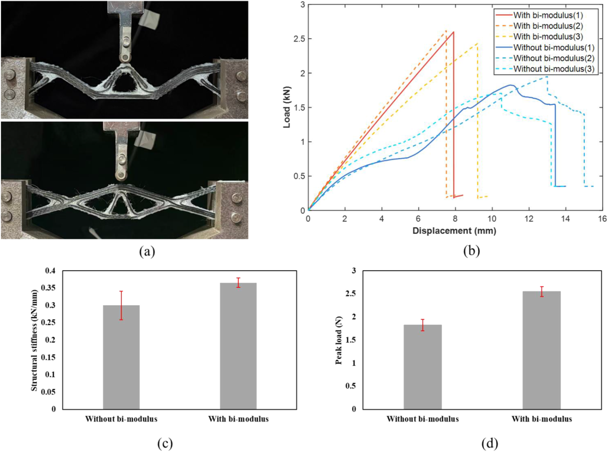
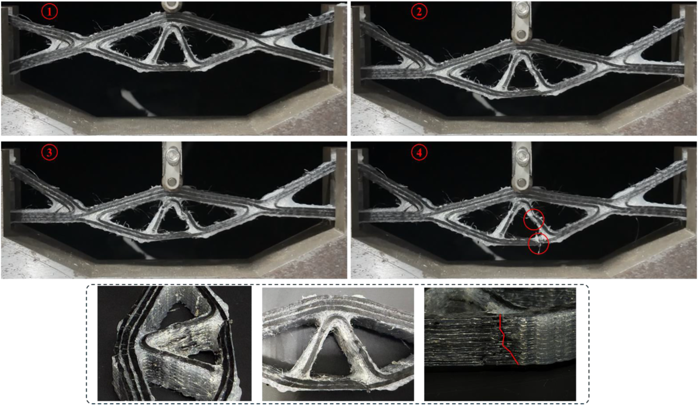
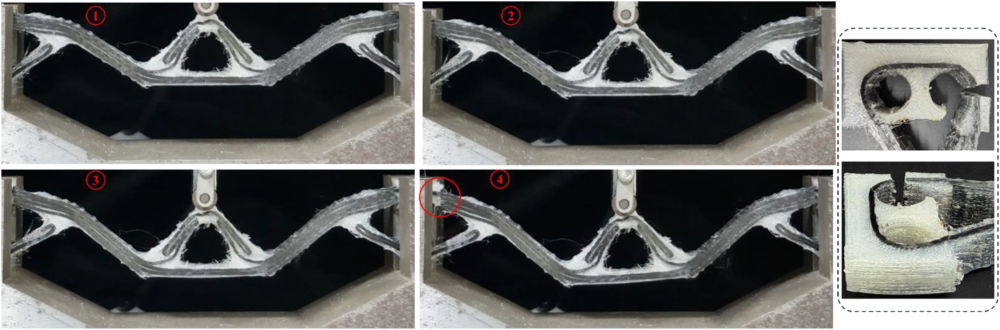
Citation
@article{guo2026derivable,
title = {Derivable geodesic weaving: enabling tension-compression
anisotropic topology optimization of densified continuous
fiber paths with controlled-spacing},
author = {Guo, Yifan and Su, Chang and Liu, Jikai and Xu, Shuzhi
and Yamada, Takayuki},
journal = {Composites Part B: Engineering},
volume = {317},
pages = {113604},
year = {2026},
doi = {10.1016/j.compositesb.2026.113604}
}
Acknowledgements
This work was supported by the National Natural Science Foundation of China under Grant 52475290. The authors also acknowledge Professor Bin Zou for providing the continuous-fiber 3D-printing equipment used in the experiments.